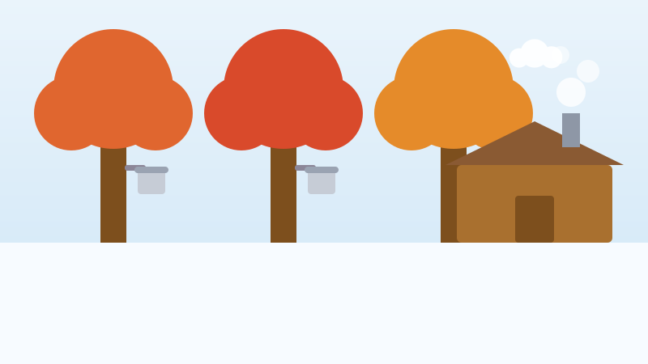
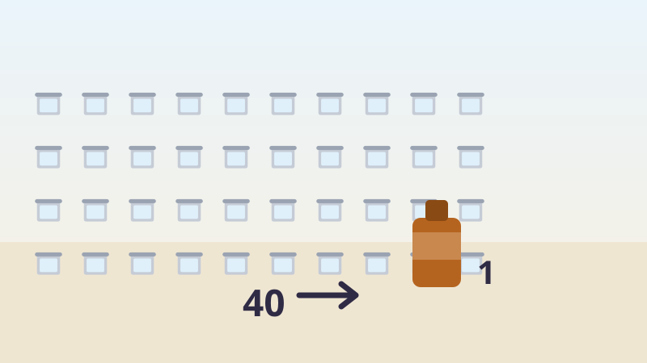

🍁 Pour les enfants
De l'eau sucrée, des chaudrons et le grand vol de sirop
Le sirop d'érable commence comme de l'eau qui circule dans un arbre, et on en a déjà volé des barils entiers.

De l'eau qui circule dans un arbre
Tout l'hiver, l'érable à sucre dort avec des réserves à l'intérieur. Puis, à la fin de l'hiver, il faut quelque chose de très précis : des nuits de gel et des journées assez douces pour dégeler.
Ce gel et ce dégel font circuler la sève de l'arbre. La sève n'est pas du sirop. Elle est claire et liquide, comme de l'eau légèrement sucrée, et si vous y goûtiez, vous ne remarqueriez peut-être même pas le sucre.
Un producteur perce un petit trou, y installe un chalumeau, et la sève coule dans une chaudière ou dans un tuyau. Un arbre en santé n'en souffre pas. On ne prend qu'une petite partie de sa sève, et les mêmes arbres sont entaillés année après année toute leur vie.
Toute la saison est courte. Quelques semaines, et c'est fini jusqu'à l'année suivante.
Quarante chaudières pour faire une bouteille
La sève est ensuite bouillie, généralement dans une longue casserole plate, dans un petit bâtiment de bois appelé cabane à sucre. La vapeur s'échappe du toit pendant des heures.
L'ébullition fait partir l'eau et laisse le sucre. Voici le chiffre à retenir : il faut environ 40 litres de sève pour faire 1 litre de sirop.
La bouteille sur votre table de déjeuner a donc commencé comme quarante bouteilles d'eau d'arbre, et quelqu'un est resté devant un chaudron brûlant pendant que trente-neuf d'entre elles se transformaient en vapeur.
Le Québec produit environ soixante-dix pour cent de tout le sirop d'érable du monde. Pas soixante-dix pour cent de celui du Canada : soixante-dix pour cent de celui de la planète entière.

Un entrepôt rempli de barils
Comme une mauvaise année laisserait tout le monde à court, les producteurs de sirop du Québec conservent une énorme réserve de sirop en barils dans un entrepôt. C'est un peu comme une tirelire pour toute une industrie.
En 2011 et 2012, des voleurs ont trouvé comment y voler. Ils sortaient des barils, vidaient le sirop et remettaient les barils en place remplis d'eau.
Un baril d'eau et un baril de sirop se ressemblent exactement de l'extérieur. Personne ne s'en est aperçu pendant des mois.
Quand quelqu'un est enfin monté vérifier les barils à l'été 2012, l'un d'eux a vacillé. Il était rempli d'eau. Environ 2 700 tonnes de sirop avaient disparu, pour une valeur de près de dix-huit millions de dollars.
La police les a attrapés. L'homme qui avait organisé le vol est allé en prison pendant près de huit ans, et quelques centaines de tonnes de sirop ont été retrouvées et rapportées.
Des mots à connaître
- La sève
- Le liquide aqueux qui circule dans un arbre et transporte sa nourriture.
- Entailler
- Percer un petit trou dans un érable et y poser un chalumeau pour que la sève s'écoule.
- Cabane à sucre
- Le petit bâtiment où l'on fait bouillir la sève pour en faire du sirop.
Essaie maintenant trois questions
Pas de chronomètre et aucune note à craindre. Chaque réponse t'explique pourquoi.
À propos de ce quiz
Cette histoire explique comment la sève devient du sirop d'érable, pourquoi il faut environ quarante litres de sève pour un litre de sirop, quelle part de la production mondiale vient du Québec, et l'histoire vraie du grand vol de sirop d'érable de 2011 et 2012.
Elle est écrite en phrases courtes pour les enfants de six à neuf ans, avec une image dessinée pour ce site et trois questions à la fin. Touchez le bouton de lecture à voix haute et la page lira les questions à haute voix.